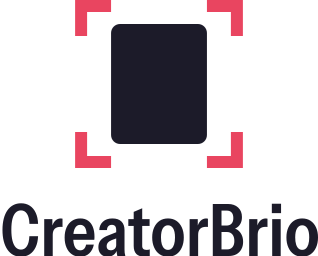
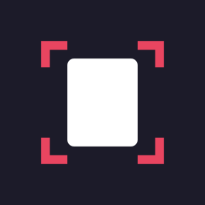
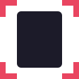

Palette
Eight colours, declared once in src/app/globals.css. Most of every screen is Canvas, Paper and Ink.
The mark, crop marks, selected states. A line or a mark, never under text.
The action that starts new work. Accessible coral text.
Headings, text, controls, dark surfaces.
The application background: the table the work lies on.
Panels, cards, sheets, dialogs.
Rare: an invitation to make something.
Secondary text.
Borders and separators; decorative only.
Contrast, measured
| Sample | Pairing | Ratio | Use |
|---|---|---|---|
| Aa | Midnight Ink on Studio Canvas | 15.14:1 | All text |
| Aa | Graphite on Pure Paper | 7.06:1 | Secondary text |
| Aa | Graphite on Studio Canvas | 6.30:1 | Secondary text |
| Aa | Pure Paper on Deep Coral | 5.37:1 | The create button |
| Aa | Deep Coral on Studio Canvas | 4.79:1 | Coral emphasis in text |
| Aa | Alert on Pure Paper | 7.31:1 | The destructive button |
| Brand Coral on Studio Canvas | 3.42:1 | Indicators and graphics only | |
| Brand Coral on Midnight Ink | 4.43:1 | The dark logo, indicators | |
| Aa | Pure Paper on Brand Coral | 3.83:1 | Fails for normal text: never do this |
Type
Instrument Sans for the interface, Geist Mono for technical values. A screen picks a role, never a size.
Logo
A sheet of work inside four crop corners: the same marks the app draws around whatever is selected. Clear space is one corner arm on every side.


Icons and small sizes


Actions
Creating is Deep Coral and appears once per screen. Everything else is ink or quieter. Destroying is an outline, so it can never be mistaken for creating.
Selected is coral
Soft Blush invites
A project is one carousel, document or Reel cover. Start one and it appears here.
Your brand stays yours
CreatorBrio's identity dresses the workspace. The brands people create dress their work. The two never mix: no product colour, font or logo reaches a slide, a preview or an export.
The interface, the logo, the icons, marketing.
Their slides, previews and exports, in their colours and fonts.
Do and don't
Do
- Fill only the action that starts new work with Deep Coral.
- Mark selection with Brand Coral lines, corners and icons.
- Keep panels Paper and the background Canvas.
- Set dimensions, ratios and timecodes in Geist Mono.
- Draw previews and exports in the person's brand.
Don't
- Make Save, Export or every button coral.
- Put white text on Brand Coral.
- Tint sidebars, menus or hovers Soft Blush.
- Add purple, blue, cyan or yellow accents.
- Put CreatorBrio's colours, fonts or logo in a person's work.